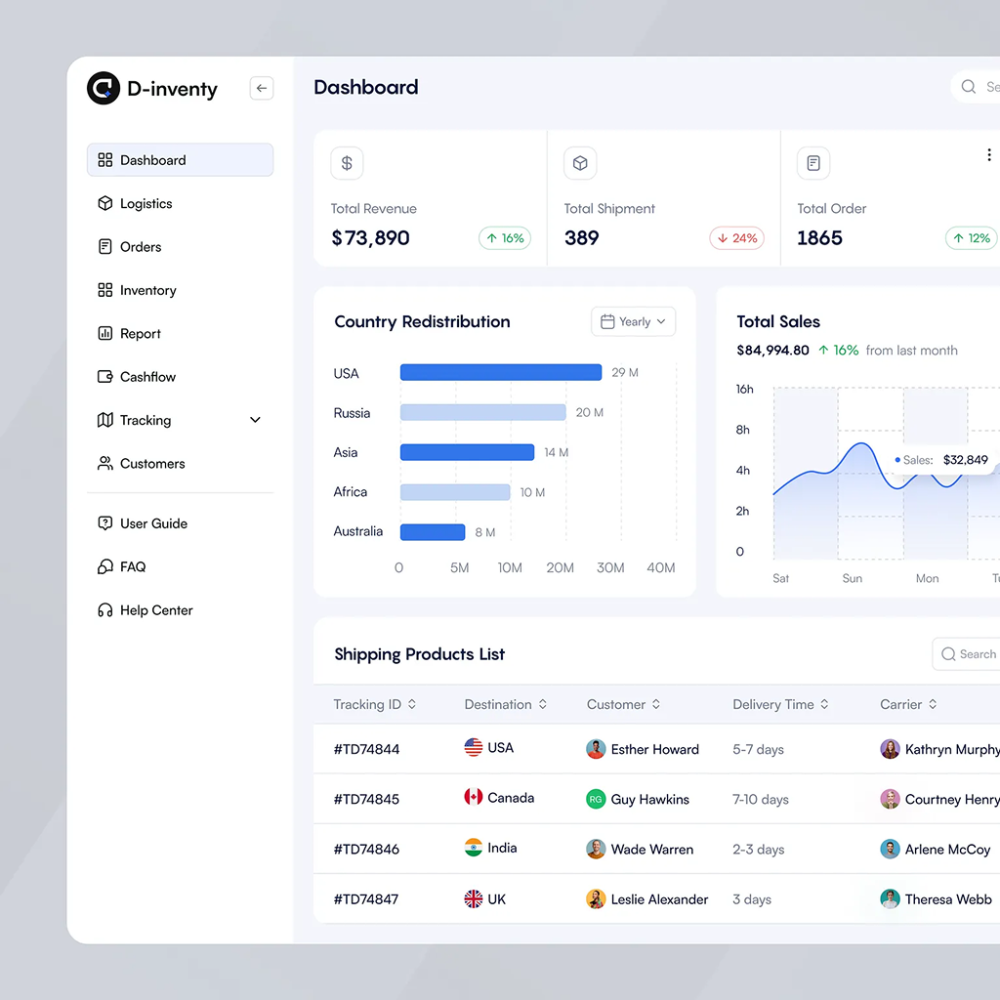
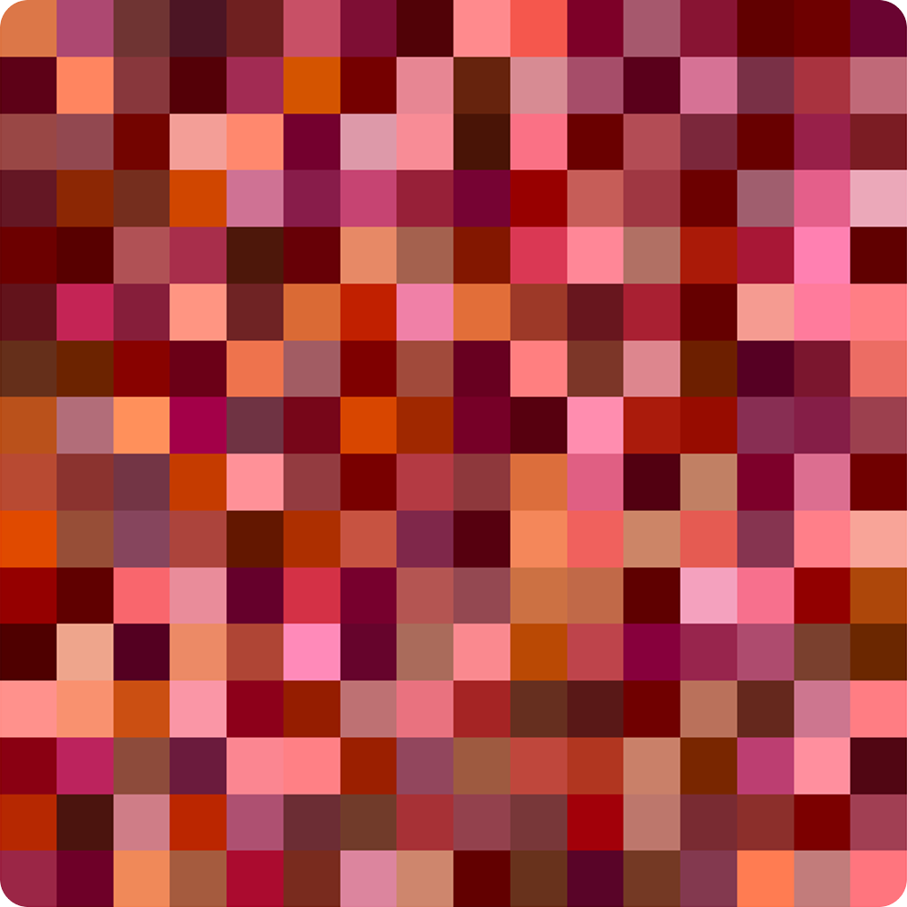
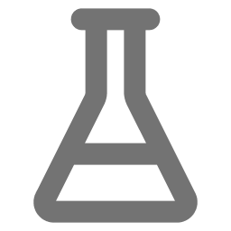
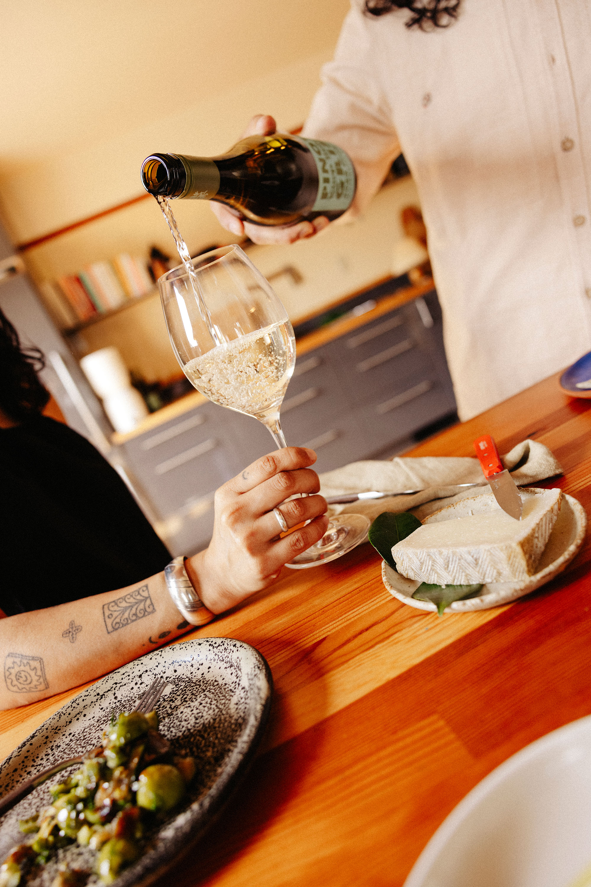
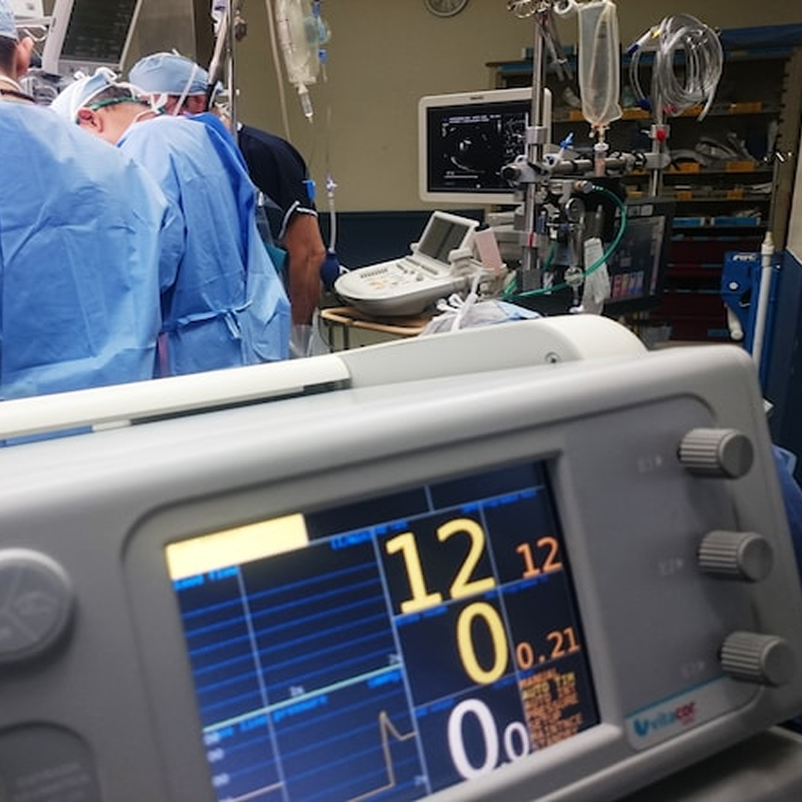
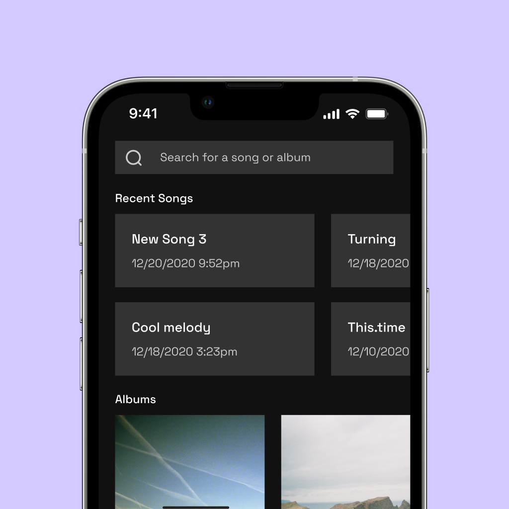

par 360
research, strategy, ux, ui, all of it. targeted workflow improvements and a holistic ui overhaul.
case study
randogrid
a fun freaky little web app experiment where the user can make random grids of pixels move and shift to their whim.

fun stuffthe vibe trap
vibes are important, but they aren't the point. use them wisely.
thoughts
union wine co.
full redesign and consolidation of multiple websites into one source of truth for all things union wine.
case study
medical device ui redesign
one of my favorite ux projects ever happened to be my first. ux research and design for the interface of a vital medical device.
case study
composr
a little ios app for songwriters to sketch their ideas in real time.
fun stuffvideo games
just some weird musings about life, memory, and tekken 3.
thoughtsdesigned by matt langlais. built with two hands. 🤲